The optical assembly contains some very strange and novel optics, unlike anything ever seen in an optical pickup before. Because of this the optical assembly now has its own page!
Sam Goldwasser and I have done a number of patent searches in order to determine exactly how this fascinating thing works! It would appear that the strange components are a result of Sony using its three diode laser, and a common beam-path for all the used wavelengths. This approach reduces the size of the pickup (as opposed to two objective designs), but does make the optical design somewhat complex!
Here are photos of the PS3 sled, the KES-400A:
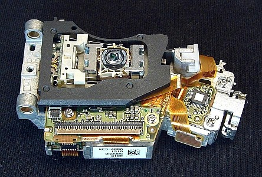
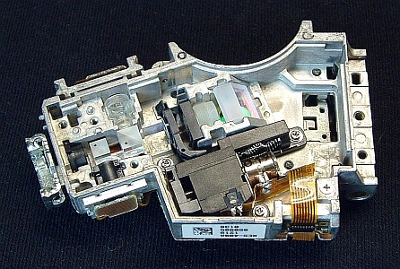
(Click on photo for closeup.)
The top view of the PS3 sled shows the objective lens and the elaborate flex-PCB that interconnects all the electronic components (more on this below). The Laser diode sits in the little metal mount on the right. The bottom view is what is visible by removing the cover and a pair of little brackets that help to ensure that the optics components stay in place. The first and most obvious oddment here is the lens on its servo (the large black object) and is pictured below, removed from the sled.
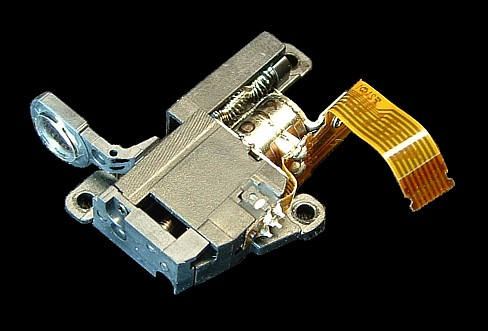
(Click on photo for closeup.)
The metal cylinder is a micro-stepper motor which moves the lens mounted on the plastic bracket via screw drive on a linear track. The unit plugs into the flex-PCB via the 8 conductor flex-cable. To get an idea of the scale, that motor is about 6 mm (1/4") long.
At first I had concluded that this was needed on account of the three wavelengths used giving different focal lengths, since passing 405 nm through a single lens will give a shorter FL than passing 780 nm through it. However, Sam was recently sent an HD-DVD pickup, with two objectives, and separate paths for the 405 nm and 660/780 nm. The optical path for 405 nm ALSO contains a similar zoom lens as shown below:
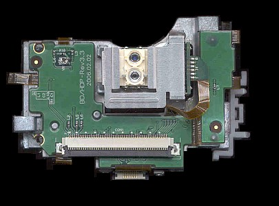
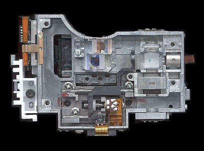
(Click on photo for closeup.)
The photo of the top of the HD-DVD sled shows the dual objective lenses, both mounted on the same actuator assembly. The upper lens is for the CD and DVD and the lower lens is for the HD. Note that the marking on the PCB actually says "BD/HDP". I'm calling it HD-DVD because that's what I was told by the person who sent it to me (Sam) but it may indeed be designed for both BD and HD-DVD operation, probably made by LG. Unfortunately, the model of the equipment it was removed from is not known.
In the photo of the bottom of the HD-DVD sled, the path for the 405 nm laser is the lower path and travels right to left. Note the zoom lens assembly! The upper path traveling left to right is 660/780 nm (note there is no beamsplitter evident here, just a single collimating lens and turning mirror! This is because the Laser diodes, beamsplitter, and photodiodes, are integrated into one can! This is fairly common in modern DVD/CD players, and according to some of the patents have seen this is how the combined 405/660/780 nm diode will most likely end up!)
After some serious patent digging, it is apparent that the objective lens sits less than 600 μm away from the disc when reading Blu-ray discs. Since there are Blu-ray discs that are multilayer, you would probably end up with the objective considerably closer to, if not embedded in the disc, when reading deeper layers! The collimating lens on the servo is therefore variable so as to extend the range of focal lengths available at the objective.
The variable focus servo lens moves on a linear track driven by a micro-stepper motor. An LED and photodiode arrangement and a small `flag` ("photointerrupter"), provides the a position reference.
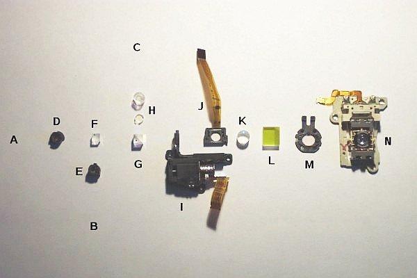
Exploded view of the optical parts in the head
Item "J" is very unusual. It comprises of a small LCD, approximately 4 mm square with a polymer flex-cable attached. On the cable near the window is a small IC.
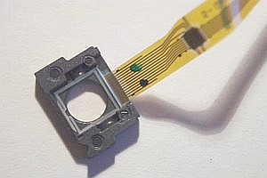
Mike Harrison has some pictures of the unit being powered at: http://www.electricstuff.co.uk/violaser.html
Since it is a peculiar item to find in an optical pickup, we trawled through the patents again, to find its exact function. According to the patents, it is there primarily to correct wavefront aberration, and in addition, spherical aberration, astigmatism, and coma. These are the following patent references, showing the segmented electrode pattern, and technical explanations:
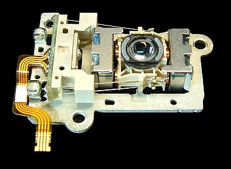
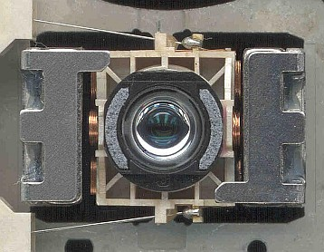
(Click on photo for closeup.)
The final curiosity, deserving of more explanation, is the objective lens. We noticed that the lens has a peculiar raised dimple in the middle, surrounded by two flat anular rings. I had noticed, that when a laser is shone though it, that a pattern of rings appears on a surface in front of the lens.
We have not found a patent relating to the lens surface, though we concur, that the raised portion on the outer surface of the objective is there, to shorten further, an already short focal length. The rear surface of the lens is highly aspheric, having a profile like the pointed end on an egg.
When the objective was removed for investigation, a circular diffraction grating was discovered right behind it. A laser at 660 nm was shone through this grating, and resulted is a small central spot surrounded by several thick rings. A laser at 405 nm was shone through the grating, and this time, a tiny central spot was produced. All of the junk in the beam was neatly dispensed with by the grating!
I had concluded that this was what it was for, but we turned to the patents again for solid proof of application. The following is an edited excerpt from a patent describing the function of the concentric ring diffraction grating, which is actually three in one:
"The diffractive optical element diffracts the light (@660 nm), so that the diffracted light is incident on the objective lens at an optimal divergent angle, whereas the second diffractive part of the diffractive optical element diffracts the the light beam (at 405 nm) so that the diffracted light is incident on the objective lens in an optimal amount, and at an optimal divergent angle. As a result, the spot shape and the amount of the light beam, having each of the wavelengths can be made appropriate with respect to (the type of media used)".
From:
Below are photos of the bottom of the objective lens assembly. The optical element visible in these photos is a molded plastic disk with a zone plate on the bottom surface and possibly a Fresnel corrector on the top surface. Both surfaces are AR coated. This optic is separate from the objective asphere shown above.
(These may actually implement a diffractive optic called a "Harmonic Optical Element" (not to be confused with a Holographic Optical Element with the same acronym). See: DIFFRACTIVE OPTICS: Harmonic optical element simplifies Blu-ray optics. For this discussion, we'll stay with our terminology.)
The zone plate on the bottom surface - a series of circular rings with a variable pitch from center to edge - shows up quite well in the left photo, and especially in the closeup on the right.
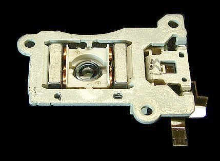
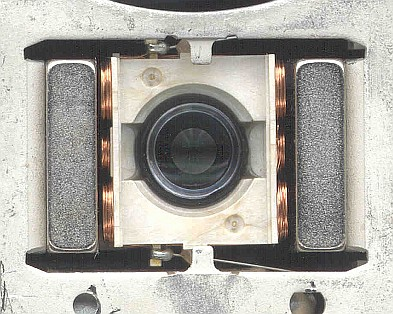
(Click on photo for closeup.)
Closeup of bottom of objective lens assembly showing zone plate in center of lens.
I inspected a zone plate extracted from the objective under a microscope at a magnification of 430X. One side (the bottom surface) consists of approximately 96 embossed circular rings with alternating heights differing by perhaps 0.005 mm. (So, 48 pairs.) It appears to have been molded and the lower height rings tend to accumulate debris. There is a clear area in the center (probably flat) with a diameter of about 0.19 mm with the overall diameter of the embossed area being about 2 mm. The pitch (distance between the rings) decreases smoothly from about 0.04 mm at the edge of the central clear area to about 0.005 mm at the outer edge of the embossed area. These measurements have an uncertainty of +/-25 percent or more. :) Both sides are AR coated. A simplified diagram is shown below with 5 sets of rings instead of 48 or so. The left part is of the zone plate side of the optic. Note that this is NOT the same as a Fresnel lens, though the superficial appearance is similar. For the zone plate, the rings alternate between two constant heights. A Fresnel lens consists of rings that follow the contour of the original normal bulk lens and so look more like prisms in cross-section.
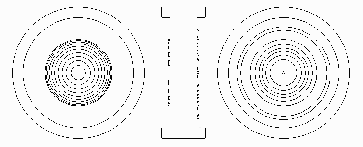
Speaking of which.... The other side (top surface) may be an aspheric Fresnel corrector - a Fresnel lens with a non-spherical profile. It also has a set of rings, but they appear to be of similar shape (not pairs of rings), There are 24 or so rings with the spacing decreasing from center to middle, and then increasing to the edge of the same area as for the zone plate. This lens appears to have a net negative curvature based on its appearance when illuminated with a light source at a grazing angle and by adjusting focus with a wide open transmission light source and observing debris and defects on the surface. However, my confidence level here is not very high, so it could be the opposite! The diagram definitely greatly exaggerates the depth at the very least! The edge of every 5th ring is slightly brighter with the grazing light source, indicating a slight change in average height. So, the height may increase for 4 rings and then drop back. (This can't be shown in the diagram because I was too lazy to try to draw out a large enough number of rings.) And, there are 2 more rings slightly outside this area but separated from it. But it's not possible to accurately determine the surface contour with any light microscope I have available. In fact, I can't be absolutely positive they are even angled like a Fresnel lens - they may simply be thin grooves. The outer two rings may very likely be just that - grooves or raised ridges (as drawn) but not part of any lens. Perhaps someone can check this out on an SEM? :)
While the zone plate pattern is very obvious, the Fresnel pattern is just barely visible to the unaided eye indicating that its height may not be very much. The height of both patterns is highly exaggerated in the diagrams!
In an effort to further determine the optical properties of the zone plate, a collimated HeNe laser with a beam diameter approximately equal to the embossed area of the zone plate was used. but the results weren't very enlightening (no pun....). There was a tiny dot, which was perhaps just what passed through the central area without change, and a rapid spreading of the beam (as with a short focal length negative) lens, but with many very noticeable ring artifacts.
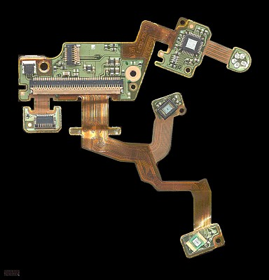
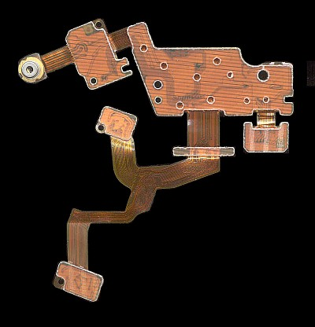
(Click on photo for closeup.)
This is by far the most elaborate wiring of any optical pickup I've ever seen. Also, interestingly, there are connectors for the objective lens assembly (upper left), zoom collimator (upper middle), and LCD panel (lower left) - they plug in and are thus easily replaced (at least in principle since alignment might still be an issue). Note the two photodiode arrays set at an angle on their mini-PCBs (surface mount via solder balls). The one on the larger section of PCB is for the CD/DVD (IR/red) signal and the one on the smaller section of PCB if for the BD (violet) signal.
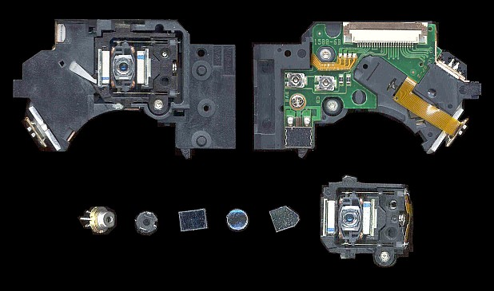
Top and bottom of PS2 PVR-802W optical block (upper) along with its optical components (lower, from left to right: Dual laser diode, diffraction grating, beamsplitter plate, collimating lens, turning mirror, objective lens assembly.
Note that the sheet metal shields have been removed from the PVR-802W, though that doesn't reveal anything terribly exciting. The resolution is the same as in the KES-400A photos at the top of this page.
The legs of the laser diode package can be found sticking out at the upper right edge of the bottom views, while the PD array is below it. The PCB is also much simpler. Compare the optical components laid out in a line with the similar photo of the ones in the KES-400A! The beamsplitter is simply a partially reflecting plate. In the view of the bottom of the optical block, the beamsplitter can just barely be seen under the larger flex cable and the edge of the collimating lens is visible to its left.